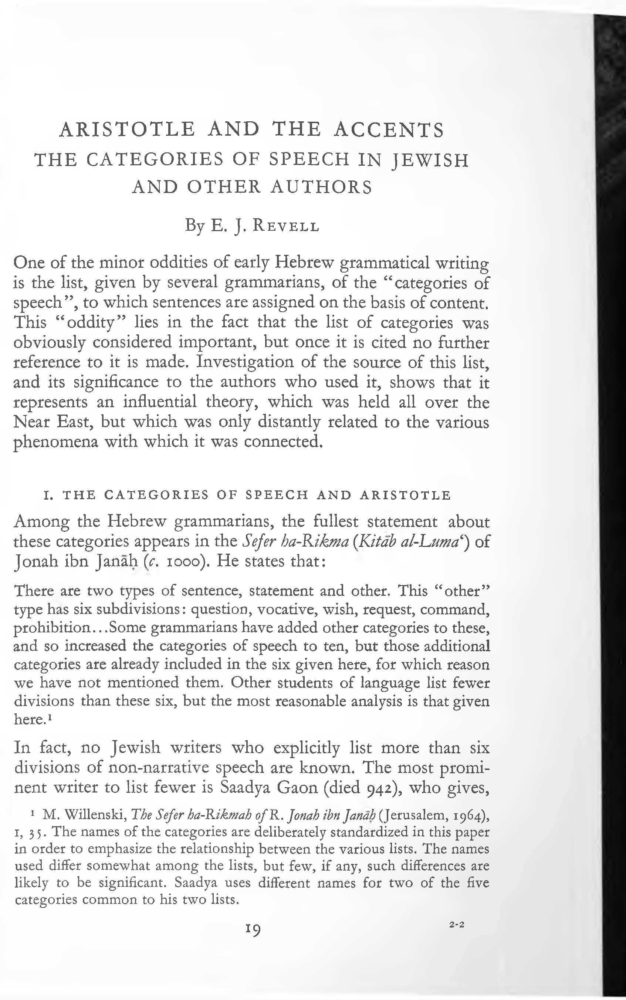

07a.14 Aristotle and the Accents
JOURNAL OF SEMITIC STUDIES
Extract from
JOURNAL OF SEMITIC STUDIES
Vol. 19, No. 1, Spring 1974
ARISTOTLE AND THE ACCENTS
THE CATEGORIES OF SPEECH IN JEWISH
AND OTHER AUTHORS
By E. J. Revell
One of the minor oddities of early Hebrew grammatical writing is the list, given by several grammarians, of the “categories of speech”, to which sentences are assigned on the basis of content. This “oddity” lies in the fact that the list of categories was obviously considered important, but once it is cited no further reference to it is made. Investigation of the source of this list, and its significance to the authors who used it, shows that it represents an influential theory, which was held all over the Near East, but which was only distantly related to the various phenomena with which it was connected.
I. THE CATEGORIES OF SPEECH AND ARISTOTLE
Among the Hebrew grammarians, the fullest statement about these categories appears in the Sefer ha-Kikma (Kitab al-Kuma^ of Jonah ibn Janah (c. 1000). He states that:
There are two types of sentence, statement and other. This “other” type has six subdivisions: question, vocative, wish, request, command, prohibition.. .Some grammarians have added other categories to these, and so increased the categories of speech to ten, but those additional categories are already included in the six given here, for which reason we have not mentioned them. Other students of language list fewer divisions than these six, but the most reasonable analysis is that given here.1
In fact, no Jewish writers who explicitly list more than six divisions of non-narrative speech are known. The most promi nent writer to list fewer is Saadya Gaon (died 942), who gives,
1 M. Willenski, The Sefer ha-Kikmah of R. Jonah ibn Janah (]erusalem, 1964), 1, 3 5. The names of the categories are deliberately standardized in this paper in order to emphasize the relationship between the various lists. The names used differ somewhat among the lists, but few, if any, such differences are likely to be significant. Saadya uses different names for two of the five categories common to his two lists.
19
2-2
ARISTOTLE AND THE ACCENTS
in the introduction to his Egron, “Vocative, question, statement, command, request.”1 In the introduction to his commentary on the book of Psalms, however, he gives “command and prohibi tion” for category four, and “request and wish” for category five, thus producing a list equivalent to, although arranged differently from, that of Ibn Janah.2
According to Allony, Saadya took the idea of the categories of speech from the book al-Shfr (The Categories of Poetry) by the Arab grammarian Ahmad b. Yahya Thadab (died 904).3 This author begins his book: “The categories of poetry are four: command, prohibition, statement, and question. ” He then gives examples of each category from the poets. After this he con tinues: “Then these roots branched out into praise, derision, dirge, apology, love poem, comparison, and narrative.” After giving examples of each of these, he continues with further categories.
Thadab’s source for his four basic categories was very possibly the Arabic translation of Aristotle’s PoeticW The categories given there are: command, prayer, statement, threat, question, answer. Tha‘lab, who was, after all, concerned with poetry {shi‘r\ not speech {qawla) as was Aristotle, seems to have rejected prayer, threat and answer as unnecessary to him. His division of the category “command” into “command and prohibition” was possibly based on the formal grammatical difference in Arabic. If this does represent his thought pattern, his categories are in the same order as Aristotle’s. The seven categories into which the basic four are said to have branched out are mostly well- known categories of Arabic poetry, and the remaining categories
1 N. Allony, Ha-’Egron...by Rap Stdadja Ga1 on (Jerusalem, 1969), p. 154,
- 59k
2 See ibid. p. 76. 3 Ibid. pp. 85-6. For Tha‘lab’s work see R. ‘Abd-al-Tawwab, 0 aw a id al-Shi6r by Abu-al-Abbas Ahmad ibn Yahya Pha6 lab (Cairo, 1966). The passages quoted are on pp. 35 and 37.
4 S. M. Ayyar, Kitab Aristutdlisfi-al-ShPr (Cairo, 1967), p. 109 (= xix. 4 of the Greek text). These categories could go back to other Greek writings. Diogenes Laertius reports that Alkidamas used a four-category division: phasis, apophasis, erdtesis, prosagoreusis (affirmation, negation, question, voca tive). See A. Gudeman, Aristoteles 66Peri Poie tikes" (Berlin, 1934), pp. 333 f. (I am most grateful to my colleague Professor D. P. de Montmollin for this reference.) These four categories could possibly have been interpreted as “command, prohibition, question and statement”. In view of the apparently firm Syrian tradition of the categories, however, such a source seems unlikely.
20
ARISTOTLE AND THE ACCENTS
deal with figures of speech, rhyme and verse structure.1 Tha‘lab has left the realm of Aristotelian theory for more direct contact with the realities of Arabic literature.
The four basic categories listed by Tha‘lab correspond only to three of the categories in Saadya’s list of five. Moreover, the order in which the categories are listed by Saadya differs from that of Tha‘lab. If, then, Tha‘lab was Saadya’s source for the list, he made considerable changes and additions when adapting it to his needs.
It could, in fact, equally well be suggested that Saadya derived his list of categories from the Arabic translation of Aristotle. Four of his five categories might have been derived from this source, as his “request” (ώ/‘) might possibly be equivalent to Aristotle’s “Prayer” (salab, Greek ευχή); again, however, the order in which the categories are listed in the two sources is quite different, and only one name (amr “command”) is the same in both lists. Again we must agree, then, that if the Arabic trans lation of Aristotle’s Poetics was the source of Saadya’s list, he either did not use it directly or else made considerable changes in it.
It seems unlikely, in fact, that Saadya did take his list of categories from either of the Arabic sources suggested, since a much closer parallel can be found in Syriac writings. The Syriac scholar Probus, who lived around 500, says in his commentary on Aristotle’s περί ερμηνείας, “The object of Aristotle in this book is to teach us about speech, but not about all speech, for there are five categories of speech: question, vocative, request, command, and statement.”2 He gives here the same five categories that Saadya lists, and gives them in the same order (save that “state ment” is placed last instead of first) as the corresponding cate gories in the list of Ibn Janah. It seems clear, then, that these Jewish authors are more closely related to this Syriac source than to either of the two Arabic ones described.
According to Greek tradition, the analysis of speech into categories of this sort was first made by Protagoras.3 By the time of Aristotle, such analysis was an accepted feature of the theory of rhetoric. The idea was developed in different ways by different
1 On the significance of these categories see W. Heinrichs, Arabische
Oichtung undgriechische Poetik (Beirut, 1969), pp. 26 ff.
2 See G. E. Hoffmann, Oe hermeneuticis apud Syros Aristoteleis (Lipsiae,
1869), p. 66.
3 See A. Gudeman, op. cit. pp. 3 3 5 f.
21
ARISTOTLE AND THE ACCENTS
schools, and consequently the number of categories, and the categories themselves, varied from school to school.1 Probus, in the passage quoted, gives the viewpoint of the later peripatetics. It is noteworthy that he does not attribute his list to Aristotle, but uses it to interpret Aristotle, exactly as did Greek writers of the peripatetic school.2 Later, less knowledgeable scholars - per haps from an uncritical reading of Probus’ work - attributed these views of the peripatetics to Aristotle himself (see below). Thus the idea of the categories of speech, and in particular the five categories distinguished by the peripatetics, came to be associated with Aristotle, and endowed with his immense prestige. It is undoubtedly for this reason that the categories came to be so important for Saadya and other Jewish writers.
II. THE CATEGORIES OF SPEECH AND THE ACCENTS
As stated above, it seems to have been the Syrians who con nected the five categories of speech with Aristotle. This connec tion seems to have been accompanied by the view that the categories referred to the “tones of voice”; the phonological phenomena which mark a spoken sentence as a statement, question, etc., comparable to the pitch contours of English speech.3 As a result, the categories came to be identified with the Syrian accents. These are of two types: those which indicate the relation of words and phrases (mostly by indicating the pauses between them), and those which indicate the meaning of the unit marked as expressing question, astonishment, etc. The term “sense accent” will be used here as a convenient designation for this latter group, and the term “pausal accent” for the former.
1 See ibid, and C. Prantl, Geschichte der Logik im Abendlande, I. Band
(Leipzig, 1927), pp. 440 f. for the Stoics, and p. 5 50 for the peripatetics.
2 Cf. with the passage from Probus quoted above the anonymous com ment quoted by Prantl (op. cit.^. ; 50 n. 54):“He(Aristode) has the object of teaching about the statement alone. We say ‘alone’ because speech has five divisions: wish, vocative, command, question, and statement.”
3 I. Bywater, Aristotle on the Art of ־Poetry (Oxford, 1909), p. 2 5 8, states that this was their meaning for Aristotle, but this seems to me doubtful. In any case the peripatetics, and also Probus, regarded them as categories of meaning, as is shown by their listing of quotations, with no mention of the sounds of speech, as examples of the different categories. (Prantl, op. cit. p. 550 n. 53; Hoffmann, op. cit. p. 66.) Further, for Probus, the distinction between “command” and “request” is that the former is spoken to an inferior, the latter to a superior, an idea also expressed by a Greek com mentator. (See Hoffmann, op. cit. p. 66 and p. 116 n.14.)
22
ARISTOTLE AND THE ACCENTS
It seems obvious that these sense accents must have been derived from whatever features of pitch, stress, emphasis, etc., were normally used in spoken Syriac to indicate question, astonishment, etc. They were indicated in the written text by accent signs. These were intended to enable a reader to give meaning to bis reading by using these tones of voice (or perhaps musical conventions derived from them) in the appropriate places, which would not otherwise always have been clearly recognizable.1 These sense accent signs, then, by indicating the appropriate tone of voice, also indicated that the unit which they marked belonged to a particular meaning category. Hence the identification of the Aristotelian categories of speech with the tones of voice, and with the accent signs which indicated them. The identification of the five categories with Aristotle and with the accents is made in an anonymous treatise written, probably, in the seventh century. This states that “Aristotle, in his wisdom, named five signs of discourse: question, vocative, request, command, statement... Other grammarians, however ...have handed down ten points.”2 The five categories of Aristotle are clearly taken as representing the same thing as the ten points, namely the Syriac accents. The names given to the five categories are in fact also used as accent names in the treatise.3
The use of all the names of the categories of speech as accent names seems, however, to be an innovation. In an earlier list naming accents said to have been invented by Joseph Huzaya, only three of these names are used.4 This list gives nine accent names, but pdsdqd is not among them, although it was certainly in use at the time. It is quite likely, then, that this “list of Joseph Huzaya”, plus pdsdqd, represents the “ten points” said in the
1 The pausal accents, designating the various types of pause characteristi cally separating major or minor units of narrative or descriptive speech, would have been equally firmly connected, in origin, with the features of spoken Syriac. For a general description see J. B. Segal, The Diacritical Point and the Accents in Syriac (London, 1953), pp. 59 ff.
2 Note that the list given is the same as that of Probus. The Syriac text is given in G. Phillips, A Tetter by Mar Jacob. . .on Syriac Orthography (London, 1869), p. 68; cf. Segal, op. cit. p. 120. That pdsdqd indicates the category “statement” is quite clear from the passage quoted by Segal (ibid. p. 133, see also Phillips, op. cit. p. 84), where the accentpdsoqdis described with the words used by the philosophers to describe “statement”.
3 The inclusion of pdsdqd rests on an emendation which is obviously
required. See Segal, op. cit. p. 121 n. 3.
4 Segal, op. cit. p. 66.
23
ARISTOTLE AND THE ACCENTS
anonymous treatise to have been handed down by the “other grammarians”.1 It must be noted, however, that the list of Joseph Huzaya not only omits two sense accents corresponding to two of the Aristotelian categories (vocative and request), but also includes one (astonishment) which does not appear among the Aristotelian categories.2 Despite the fact, then, that some Syrian scholars did ascribe the origin of the accents to Aristotle, it is quite clear that the earliest development of the Syrian accents did not originate from the Aristotelian categories of speech. We have to assume that at some point - presumably between the stages represented by the Joseph Huzaya list and that of the anonymous author - it came to be accepted that the Aristotelian categories and the Syriac accents referred to the same pheno mena. From this point on, the Aristotelian categories seem to have played a considerable part in the development of the accent system - or, more correctly, of the theoretical view of it taken by the scholars.
This becomes clear from a consideration of the increase in the number of accent signs in use and in the names applied to them. In the list of accents ascribed to Joseph Huzaya, which appears to represent the earliest stage of the system recorded in a theo retical work, seven signs and nine names are used (or, if pdsdqd is included, eight signs and ten names). Two signs each have two names, of which one, or both, designate a sense accent. A pre positive superscript dot marks both mesa”land (question) and pdqddd (command), while a prepositive subscript dot marks both metdammrana (astonishment) and menabhtd (lowering).
In the (West Syrian form of the) list of “early accents” given by Segal3 ten signs and thirteen names are used. Two new signs, with new names, have been introduced for two new pausal accents. The third new name designates a sense accent marked by one of the older signs. At this stage, then, three signs each have two names, and in each case at least one member of the pair designates a sense accent. Four sense accents are used altogether, and, with the exception of mesa”land and pdqddd (question and command) which are marked by the same sign, they are differ entiated by their signs.
1 Ibid. p. 67. 2 This could possibly have come from other Greek sources. The Stoics included a similar category, thaumastikos, among the dozen they distinguished (Prantl, op. cit. p. 442). But it seems more likely that it was native to Syria.
3 Op. cit. pp. 64-5.
24
ARISTOTLE AND THE ACCENTS
By the period of Thomas the Deacon, twenty-four names are used for twelve signs.1 The two new signs are composed from signs already in use, and mark pausal accents. Of the eleven new names used, four can be classified as sense accents, and all of these are marked by the prepositive superscript dot which already marked two of the original sense accents, mesa”land and paqoda (question and command). The new names are qaroyd (vocative), mepisdnd (request), mehawwydnd (demonstrative) and meqallsdnd (praise).2 The first two of these, of course, are the two Aristotelian categories named by Probus which had not before been used as accent names. Four of the categories, then, question, command, vocative, and request, are now all marked by the same sign. The fifth category, statement (pasoqdp is marked by a different sign, the pdsoqa sign (see p. 23, n. 2). With this new development, then, we not only have all five Aristotelian categories repre sented in the accent system, but the division between “state ment” and “other” categories (which was also a cardinal point in peripatetic theory, and which, unlike the categories themselves, does appear to originate with Aristotle)3 is represented as well.
It is impossible to believe that this situation resulted naturally from the manner of reading. The inclusion of mepisdnd (request), when mesallyanawith identical significance but marked by a different sign, was already in use, shows this.4 The great scholar Jacob of Edessa, living when the West Syrian culture was at its zenith, confused the two accents.5 Later we find an entirely
1 Segal, op. cit. pp. 120 ff. 2 This latter accent had, at this period, an alternative name, yaheb tuba, which was soon distinguished as a separate accent (Segal, op. cit. pp. 125 f.). Another new accent, mebattldnd (annulling), had an alternative name which could be taken as meaning “warning”, but despite this it does not seem to have been used as a sense accent (ibid. p. 130). Its sign is the same as that for the sense accent metdammrana.
3 Aristotle distinguishes “statement” from “other” categories in Peri Hermeneias 4, on the grounds that only a statement can be true or false. This idea was maintained by the peripatetics (Prantl, op. cit. p. 5 50 n. 53) and the Syrians, e.g. Probus (Hoffmann, op. cit. p. 66).
4 The name mesallydnd was used for the category “request” in a tradition first known from Sergius of Ras ‘Ain (early sixth century, see Hoffmann, op. cit. p. 115 n. 13). Despite later attempts to formulate a distinction between the accent named mesallydnd and that named mepisdnd, the two words clearly had the same basic meaning.
5 Segal, op. cit. p. 125. Note that the second example given here for
mepisdnd is virtually identical to that given on p. 133 for mesallydnd.
25
ARISTOTLE AND THE ACCENTS
artificial criterion introduced to distinguish the two: if God was addressed, the accent was called mesallyänä·, if a created being, mepisänäP Clearly practice did not require mepisänä. Its introduc tion can only be due to theory; the theory that the accent system should depict the five Aristotelian categories as currently under stood. It is, after all, quite clear that the West Syrians could, and did, invent new signs for phenomena that they wished to repre sent clearly. The plethora of names used for the prepositive super script dot represents scholarly theorizing on the passages in which the (presumably uniform) phonic phenomena represented by this sign were used in the reading tradition, and the sign was used to mark them in the text. Clearly one item basic to this scholarly analysis was the theory of the five Aristotelian cate gories of speech.
A similar development can be observed in the Samaritan accent system. This system, as described by Ibn Dartha, contains four pausal accents and six sense accents.2 The sense accents are: siyyala (question), ^iqa (vocative), atmaP (astonishment), bap (wish), ^aff (rebuke), and turu (command). Ibn Dartha gives several biblical quotations as examples of the use of each of these accents. In the biblical MSS collated by von Gall, however, a very different use of the accents appears.3 In only one case (siyyala) is a sense accent required by Ibn Dartha used in all the passages which he gives as examples, and then only in one of the twenty-four MSS in which accents are used in these passages. This sign is, in fact, used in only 48 per cent of the cases in which the MSS show an accent in the passages used as examples. Zfiqa just tops this with (almost) 50 per cent, and the only other sense accent to approach this proportion is ^if with 42 per cent. At the other end of the scale, turu occurs in only one of the seventy possible cases (although in the passages in which other sense accents are required by Ibn Dartha, the turu sign is used in ten cases). In the remaining sixty-nine cases, pausal accents are used. The signs for atmau and baP occur slightly more frequently where required by Ibn Dartha, but signs for other sense accents
1 Hoffmann, op. cit. p. 116 n. 13. 2 Ibn Dartha possibly lived c. 1000. See Z. ben Hayyim, The Titerarj and Oral Tradition of Hebrew and Aramaic Amongst the Samaritans, 1 (Jerusalem, 1957), introduction, p. 50. His treatise is published there by Ben Hayyim (vol. n), pp. 341 if., cf. pp. 363 ff. Cf. also R. Macuch, Grammatik des samaritanischen Hebräisch (Berlin, 1969), pp. 76 if.
3 See A. F. von Gall, Der hebräische Pentateuch der Samaritaner (Berlin,
1966).
26
ARISTOTLE AND THE ACCENTS
Sign used in MSS
(
Siyyala atmau bau ^iqa turn
pausal accent
Sign required by Ibn Dartha
____ A___________ .
Siyyala
atmau
ba^u
^‘iqa
-turn
42 7 — — 3 — 36
18 II — — I — 5°
21 3 13 — 5 — 34
— — 1 57 1 — 56
— — — — 1 — 69
9 I — — — 21 19
are used more frequently still in these passages. The situation is clearly shown in the above table.
The signs for %e‘iqa and ^aij are used only where required by Ibn Dartha, but there is considerable freedom in the use of the other signs. The siyyala sign is, however, the sign most com monly used not only where siyyala is required, but also for atmalu and ba^u. This suggests strongly that the siyyala sign originally covered all three functions. It is, in fact, easy to find MSS which support this suggestion, in that, if any sense accent sign is used where Ibn Dartha requires atma'a or ba^u, it is the siyyala sign, whereas the signs for the other two accents are not used at all, or occur only as isolated examples where another sign is expected. Von Gall’s MSS € (1220), Q and N (1360), and P and H (1434), are all examples of this type. Similarly, no MS of those collated by von Gall uses the turn sign in the way prescribed by Ibn Dartha, and only four MSS use the sign at all.1 The function of this accent was clearly not established in the scribal tradition.
It seems reasonable to suggest, then, that in common Sam aritan practice only three sense accents were used:2 siyyala, ^iqa and %a‘if. Scholarly analysis separated the functions of siyyala into three divisions, retaining this name for one, and calling the others atma’a and ba^u. In contrast to Syrian practice, distinct signs corresponding to these names were developed from the siyyala sign (and hence the similarity of these three signs
1 These are MS (1220), A and B (fourteenth century) and C (fifteenth
century).
2 It is assumed that the system of three sense accents represents an earlier stage than that of the six (cf. the Syrian development) but in fact, in the MSS collated by von Gall, the two traditions appear simultaneously - in so far as the system of six, of which there is no example corresponding to Ibn Dartha’s requirements, can be said to appear. No doubt the actual signs were a rela tively late introduction. Cf. Macuch, op. cit. p. 59.
27
ARISTOTLE AND THE ACCENTS
noted by Ben Hayyim).1 The use of these new signs, however, never became firmly established in scribal practice. It appears probable that, in the same way, the sign for turn was developed from that for but the use of this new sign never became established at all. Indeed the testimony of the MSS is that the passages given by Ibn Dartha as examples of turu do not require any sense accent.
This common system, using three sense accents, would have had seven accents in all. It seems probable that we have definite evidence of the widespread use of this system in the statement of Ibrahim al-‘Ayya (eighteenth century), when claiming support for the tradition that the ten-accent system reaches back to Moses, that these accents “are, among us, ten.. .just as they are seven among others”. The idea that a system of accents different from that which Ibrahim describes was in common use would explain the somewhat polemical tone of the passage, and the idea given above would explain the number seven, which is other wise difficult to account for.2
The best answer to the question of why the Samaritans should seek to extend the number of accents beyond those recognized in common practice would seem to be that they were influenced by a theory which they felt their accent system should illustrate: the theory of the five Aristotelian categories. The seven-accent system already covered the categories “statement” (covered by the pausal accents, or perhaps specifically by afsaq, equivalent to Syrianpdsoqa), “question” (piyyala\ and “vocative” ^iqa). The three new accents added covered the remaining two categories: “request” (b^u) and “command” {turn), and also a further category, “astonishment” (atma’a). Syria, of course, was the source of the connection of the categories with the sense accents, and this addition strongly suggests that Syria was the source of the theory which influenced the Samaritans, since metdammrana
1 Op. cit. p. 340 n. 3. 2 See Ben Hayyim, op. cit. pp. 383 f. I do not find the suggestion (ibid. p. 384 n. 2) that the “others” who use seven accents were the Muslims - or the suggestion on p. 3 5 o n. 2 that the ten-accent tradition was connected with the Qur’anic division ‘ashr - at all convincing. The addition to the text of Ibn Dartha’s treatise (ibid. p. 3 50 n. 2) contains the same emphasis on “those who follow the correct reading tradition, according to the ten accents ” who “ know this ”. The knowledge referred to is of features of a Samaritan reading tradition. The opposing group, who do not follow the ten-accent tradition, must also be Samaritans, for who else would have reason for, or interest in, such knowledge ?
28
ARISTOTLE AND THE ACCENTS
(astonishment) was one of the earliest sense accents used there. The Samaritans, then, received the Aristotelian theory in a form influenced by the Syriac accent system, but it seems clear that the basic theory was indeed that of the five categories. It would otherwise be difficult to explain why just those accents - particu larly the almost unused turu - were taken over from the Syrian system.1
It is possible to trace an even earlier stage in the development of the Samaritan accent system. Many MSS make only scanty use of the sense accents, or none at all. Among the MSS collated by von Gall, those with accentuation of this sort are generally late. Early examples can, however, be found: e.g. the Sefer Abisha‘ and the Gaster scroll, neither of which marks sense accents.2 It is probably correct to assume, then, that in the earliest stage of the tradition no sense accents at all were marked. According to Segal, this was also the case in Syriac, where the first sense accent to be used was mesa״ land (question),3 It seems likely that the corre sponding accent, siyyala, was the first sense accent to be used in the Samaritan tradition, as this is the most commonly used sense accent, and evidently had, originally, a very wide application.
The Jewish accentuation used for the Mishna and other rabbinic texts shows a parallel to these early stages suggested for the Syrian and Samaritan systems. This accentuation is of a type similar to the Syrian and Samaritan, but in most MSS only pausal accents are used. In one group of MSS, however, one sense accent occurs. This usually marks a question, and so corre sponds to the Samaritan siyyala and the Syrian mesa״land. It may, however, mark other sentences requiring particular emphasis, and so would correspond to the wider use of the Samaritan siyyala, in which it also covered the function of atma’u (astonish ment).4 There even appears to be preserved, in Jewish gram matical writings, a stage of theory corresponding to this scribal 1 It is perhaps also significant that in Ibn Dartha’s listing of the sense accents, the four which correspond to the Aristotelian categories occur in the same order as in Probus’ list: question, vocative, (astonishment), request, (rebuke), command.
2 Both are probably to be dated to the eleventh century. See F. Perez Castro, defer Abisa‘ (Madrid, 1959), pp. xxxv f. The accentuation of the defer Abisha‘ is described there. That of the Gaster scroll is given by von Gall (MS T) and described by M. Gaster in Proceedings of the dociety of Biblical Archaeology xxn (1900), 253.
3 Op. cit. p. 65.
- This accentuation is described, and examples given, in my article “The Hebrew Accents and the Greek Ekphonetic Neumes ” to appear in dtudies in ־Eastern Chant, tn.
29
ARISTOTLE AND THE ACCENTS
practice. In an early list of grammatical terms published by N. Allony, sentences appear to be categorized as “statement” and “other”.1 The word used for the “other” group, tmwh, refers to questions, but also has wider connotations of astonishment and the like.
It seems likely, then, that the Syrian, Samaritan and Jewish non-biblical accent systems, which are similar in structure, under went a similar early development. Further development in the Syrian and Samaritan systems was influenced by the theory of the five Aristotelian categories of speech, which the Syrians had identified with the “tones of voice” represented by the accents. The Jewish non-biblical accentuation, however (at least as far as the MSS show us) was not affected by this theory.
The system of accents used in the Jewish Bible had a structure quite different from those discussed above, being only loosely based on the syntax of the text.2 There is no place for sense accents in'this system, so it is unlikely that the theory of the Aristotelian categories of speech could have had any effect on its development, and certainly there is no evidence that it did. The theory did, however, influence descriptions of this system. Juda ha-Levi (d. 1141), in Kitab al-Ku%ari, n, 72, in a passage intended to show the superiority of biblical compositions to Arabic metrical poetry, mentions the use of tones of voice and gestures to express “astonishment, question, statement, desire, fear or submission”. Further on, “anger, pleasure, humility and haughti ness” are mentioned as also indicated by gestures. The author goes on to state that in Hebrew the accents take the place of these tones of voice and gestures by denoting “pause and con tinuation, separating question from answer, beginning from con tinuation of speech, haste from hesitation and command from request”. This passage definitely reflects the Aristotelian cate gories, although in a form which seems closer to the writings of Aristotle himself than to the five categories of the peripatetics. Nevertheless, if “astonishment” is taken as the equivalent of “vocative”, the first three categories named, plus the last two, make up the five categories listed by the peripatetics. Moreover the use of this category “astonishment”, and the connection of
1 N. Allony, “A Qaraite list of Grammatical Terms from the Eighth Century” in Sefer ha-Zikkaron le-Korngreen (Tel Aviv, 1964), p. 355, para. 2. 2 This system is described in the article cited in n. 4, p. 29. Varying syn tactic units marked off by verse divisions can be seen, e.g., in Gen. xxxiv. 8 and Exod. vi. 10.
3°
ARISTOTLE AND THE ACCENTS
the categories with the tones of voice, suggests that the origin of this passage, although perhaps rather distant, was, in fact, the theory of the Aristotelian categories as applied to the Syrian (or Samaritan) accent system.
The grammarian Shelomo ibn Parhon included a similar passage in the grammatical part of his Mahberet he-Aruk (i 160).1 After arguing that Arabic metres are not suited to the Hebrew language he continues “We have phenomena in our language from which the reader can understand astonishment, rebuke, plea, confusion, question, or any other (such category).” He then gives a biblical quotation as an example of each category, and continues “From the accentuation of these (passages) you can understand (as well) as if the Prophet were before you, speaking to you face to face.”
This list is even farther from the five categories of the peri patetics than was that of Juda ha-Levi, but there is little doubt that they - via Juda ha-Levi himself - are its ultimate source. The claim that the biblical accents fulfil the same function as the tones of voice is put more emphatically than by Juda ha-Levi, who only implies it.2 This is of considerable interest. The biblical accents, as is well known, do not fulfil this function.3 The claim is made, no doubt, to show that the accents have a practical value, and are therefore superior to the Arabic metres, which do not. It is, of course, possible that the idea that the accents had this function could have come independently to Juda ha-Levi. It seems much more likely, however, that, as suggested above, it came to him along with the list of categories from some Syrian or Samaritan source, although it may not have come directly. This remote echo is an eloquent testimony to the strength of the tradition of the five Aristotelian categories.
1 Ed. S. G. Stern (Jerusalem, 1970), p. 5. 2 The literal meaning of Juda ha-Levi’s statement could possibly be
substantiated.
3 This is easily seen from the example for “confusion” where attention is specifically called to the accent shalshelet. This accent is rare, and con sequently special significance was attributed to it in several sources, but they do not agree on the significance. (See W. Wickes, A Treatise on the Accentua tion of the.. .Prose Books of the Old Testament (Oxford, 1887), p. 85.) It is interesting to note, however, that one of the meanings noted by Wickes (note 4 there) “repeated action”, is ascribed to the word cited by Ibn Parhon (wayyitmahmah, Gen. xix. 16) in the Midrash Bereshit Babb a (although, probably on the basis of the verb form, the accent is not mentioned), and that the other, “presence of an angel”, would also fit.
31
ARISTOTLE AND THE ACCENTS
III. THE CATEGORIES OF SPEECH AND
THE GRAMMARIANS
The passages quoted from Juda ha-Levi and Shelomo ibn Parhon are all the more remarkable in that they seem to be the only two grammarians who connected the Aristotelian categories with the tones of voice. Even John bar Zu‘bi, who seems to have been the only Syrian grammarian to refer to them, took them as referring to the meaning of sentences, not to their sound.1 Aristotle him self states that these categories, which he appears to understand as classes of meaning, are the concern of rhetoric or poetry, and it was in this latter province that they were used by Tha‘lab. Saadya also speaks of them as a feature of poetry. He is possibly in this respect dependent on Tha‘lab (as suggested by Allony), although his list of five categories must be derived from some Syriac (or possibly Greek) philosophical writing. In any case he is clearly not influenced by the identification of the five categories with the tones of voice. In fact, it seems quite likely that, in the expanded list given in his introduction to the Book of Psalms, the division of “command” into “command and prohibition”, and of “request” into “wish and request”, was based on a tendency to align the Aristotelian categories with formally distinct cate gories of Hebrew grammar.2
The next author to mention the categories is Dunash ben Labrat, who lists the same five categories as Saadya (from whom he may have taken them), but in a different order: “statement, question, address, command, request”. He lists them merely as something that a competent grammarian should know about. There is no indication in the context of the significance which they had for him.3
The list of Ibn Janah (quoted above) gives the same seven categories as the expanded list of Saayda. He may have derived the categories from Saadya, but they are listed in the same order as is used by Dunash ben Labrat. This order is, with the exception of the fact that “statement” is put first, the same order as is used in the list of Probus. This suggests that Dunash and Ibn Janah knew the tradition in the Syrian form as well as in that given by
1 See A. Merx, Historia artisgrammaticae apudSyros (Leipzig, 1889), p. 163. The five categories of the peripatetics are listed without change, in contrast to the Jewish authors.
2 The former division was possibly derived from Tha‘lab. 2 See Z. Filipowsky, Sefer Teshuvot Dunash ben Dabrat(London, 1855), p. 5,
col. 2.
32
ARISTOTLE AND THE ACCENTS
Saadya.1 It is no doubt this form of the tradition to which Ibn Janah refers when he speaks of those who “list fewer divisions than six” of “non-statement” categories. The mention of gram marians who “have added other categories” to the six he lists could possibly refer to the Stoic writers, but more likely refers to other Jewish or Arabic writers of his own day. Whichever is the case, it is clear from Ibn Janah’s lengthy discussion of the topic that the division of language into the Aristotelian categories was a widely accepted and highly valued technique in his day, and that it was still a living topic in that (unlike the situation in Syria) the number of categories recognized was not fixed.
Ibn Janah gives an extensive list of examples of each of the “non-statement” categories. It appears from this that the cate gories are at least loosely identified with formally distinct gram matical categories, as Ibn Janah is careful to point out that examples of “vocative” occur without the definite article (in its “vocative” use) which occurs in the first three examples which he gives. Similarly “request” is defined as “to someone greater than you”, for the verb in the example is imperative, the form characteristic of “command”. It is clear, then, that although the distinction of the categories is ultimately based on the meaning derived from the context, the categories themselves are definitely felt to have a grammatical significance.
Ibn Janah’s division of the categories into “statement” and “other” is an innovation as far as Jewish writers are concerned. There is no indication that he felt this to have a grammatical basis. As was noted, this division derives from Aristotle, and remained of interest to later writers.2 The same division appears to be made, possibly independently, in an early tradition of biblical Hebrew grammar.3 It is possible, then, that Ibn Janah could have derived this idea from an ancient Jewish tradition. It is far more likely, however, in my opinion, that it was contained in a philosophical tradition of Syrian origin which formed one of the sources of his list of categories.
The same division is made in the Mabberet ha-Tydn, a gram matical treatise popular in Yemen from the thirteenth century or earlier.4 This treatise is here, as in some other places, clearly
1 This is also suggested by the fact that Ibn Janah explains “request” as
“to someone greater than you”. See n. 3, p. 22 above.
2 See n. 3, p. 25 above. 4 Published by Derenbourg as “Manuel du lecteur” in Journal Asiatique
3 See above, p. 30.
xvi (1870). Seepp. 322-3 there.
3
12
ss 19 i
ARISTOTLE AND THE ACCENTS
dependent on Ibn Janah. At this point, however, it attempts to improve on its source by stating that the category “statement” occurs only in the past. Clearly, then, the Aristotelian categories were considered as connected with the grammatical categories of Hebrew, and this statement is a further clarification of this connection. “ Statement” is represented by narrative in past time, while the non-statement categories are (mostly) characterized by the use of “future” or imperative verb forms.
The two other Jewish grammarians who mention the cate gories, Juda ha-Levi and Shelomo ibn Parhon, have already been discussed. They clearly received the tradition from other sources than those used by Ibn Janah and the Mahberet ha-Ttjan. In the case of Shelomo ibn Parhon, the contrast is striking, for else where the grammatical section of his work (which was written in Hebrew) follows the Arabic writing of Ibn Janah so closely that it was taken by some as a translation.1 This makes the fact that he rejected the grammar-oriented view of the categories presented by Ibn Janah, for the connection with the tones of voice adopted by Juda ha-Levi, all the more significant.
IV. CONCLUSION
It appears, then, that the theory of the categories of speech had a rather complicated history, of which a large part is, no doubt, hidden from us. It entered Syrian philosophical writing as a natural development of Greek ideas. From there it came to be connected with the accent system, and so played a part in the development of both the Syriac and the Samaritan accentuation. It seems likely, also, that this form of the tradition reached, and influenced, Juda ha-Levi. The purely philosophical tradition con tinued, however, to be maintained in Syria, and was, presumably, the source from which John bar Zu‘bi drew his description of the categories. This Syrian tradition, or an Arabic translation of it, appears to have been Saadya’s source for his list of the cate gories and, along with the writings of Saadya, also that of Ibn Janah. The Arabic translation of Aristotle’s Poetics^ which had been made from a Syrian translation, does not appear to have influenced these scholars, although it may have served as Thaflab’s source.
The Jewish grammarians seem to have mentioned the theory
1 See H. Hirschfeldt, A Literary History of Hebrew Grammarians and Lexi
cographers (London, 1926), p. 77.
34
ARISTOTLE AND THE ACCENTS
largely because it was part of the accepted theorizing about language, and was supported by the tremendous prestige of Aristotle’s name; a comparable phenomenon to the use made of chapter twenty of the Poetics by Arabic and Hebrew grammarians. The Jewish grammarians did make an attempt to connect the categories of speech with the grammatical categories of Hebrew, but the list was, in fact, of little practical value to their grammars. Possibly for this reason, or possibly because the theory of the Aristotelian categories of speech was not current outside the Arab world, later grammars written in Europe did not include it. In the Yemen, however, it continued to survive into modern times, in successive recopyings of the Mahberet ha-Tijan.
35
3-2
